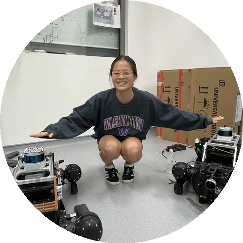
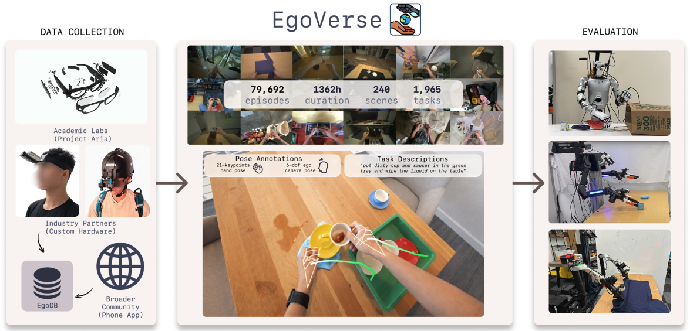
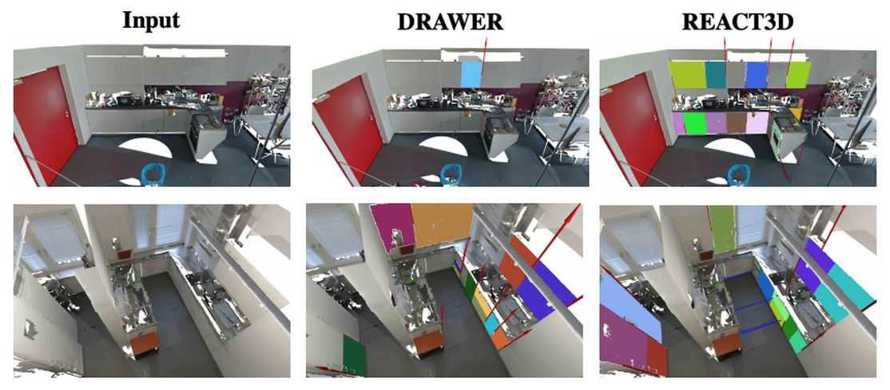
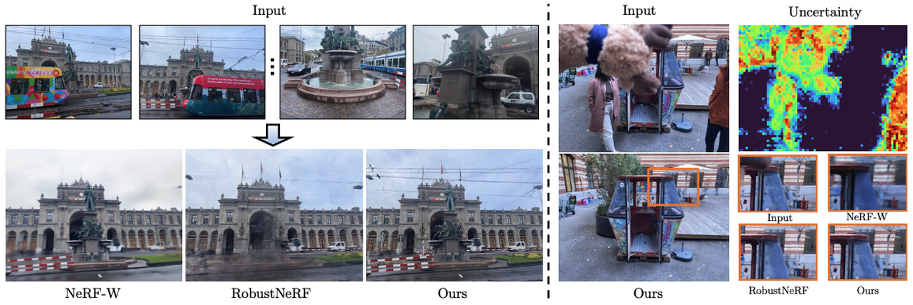
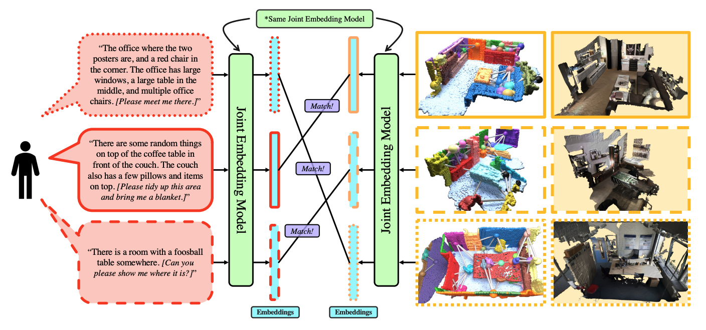
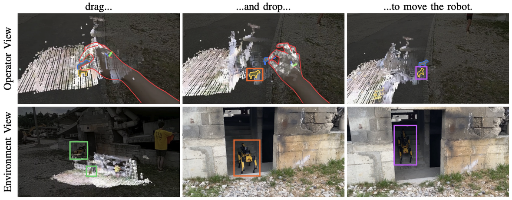
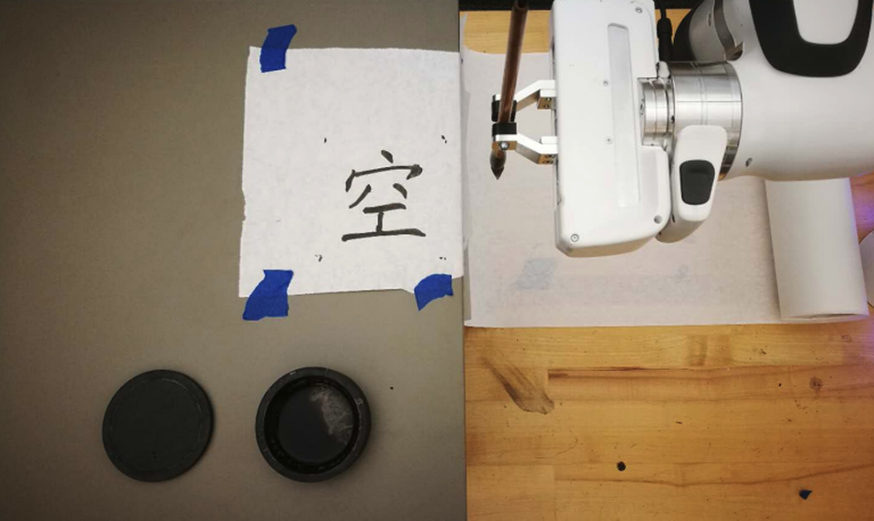

|
Julia (Jiaqi) Chen
Direct Doctorate PhD at ETH Zurich, interested in robot learning and functional scene understanding.
Email /
LinkedIn /
GitHub
|

|
|

|
EgoVerse: An Egocentric Human Dataset for Robot Learning from Around the World
Ryan Punamiya*, Simar Kareer*, Zeyi Liu, Josh Citron, Ri-Zhao Qiu, Xiongyi Cai, Alexey Gavryushin, Jiaqi Chen, Davide Liconti, Lawrence Y. Zhu, Patcharapong Aphiwetsa, Baoyu Li, Aniketh Cheluva, Pranav Kuppili, Yangcen Liu, Dhruv Patel, Aidan Gao, Hye-Young Chung, Ryan Co, Renee Zbizika, Jeff Liu, Xiaomeng Xu, Haoyu Xiong, Geng Chen, Sebastiano Oliani, Chenyu Yang, Xi Wang, James Fort, Richard Newcombe, Josh Gao, Jason Chong, Garrett Matsuda, Aseem Doriwala, Marc Pollefeys, Robert Katzschmann, Xiaolong Wang, Shuran Song, Judy Hoffman, Danfei Xu
Preprint, 2025
1,362 hours of human demos across 240 scenes and 2,087 people — a collaborative platform that lets anyone contribute egocentric data to train robots at scale.
project page /
pdf
|
|

|
REACT3D: Recovering Articulations for Interactive Physical 3D Scenes
Zhao Huang, Boyang Sun, Alexandros Delitzas, Jiaqi Chen, Marc Pollefeys
IEEE Robotics and Automation Letters (RA-L), 2026
Takes a static 3D scan and automatically figures out which parts open, how they move, and what's behind them — making any scene simulation-ready without manual annotation.
arXiv
|
|

|
NeRF On-the-go: Exploiting Uncertainty for Distractor-free NeRFs in the Wild
Weining Ren*, Zihan Zhu*, Boyang Sun, Jiaqi Chen, Marc Pollefeys, Songyou Peng
CVPR, 2024
Casually captured photos full of pedestrians, cars, and changing light? No problem — we use uncertainty to filter out the mess and still get clean novel views.
arXiv
|
|

|
"Where am I?" Scene Retrieval with Language
Jiaqi Chen, Daniel Barath, Iro Armeni, Marc Pollefeys, Hermann Blum
arXiv, 2024
Describe a place in words — "the kitchen with the red fridge" — and we'll find it in a collection of 3D scene graphs. Language-based localization without coordinates.
arXiv
|
|

|
A 3D Mixed Reality Interface for Human-Robot Teaming
Jiaqi Chen, Boyang Sun, Marc Pollefeys, Hermann Blum
arXiv, 2023
A mixed-reality interface that lets you see through walls to where your robots are, watch their maps build in real-time, and drag-and-drop them to new goals.
arXiv
|
|

|
Robot Calligraphy using Pseudospectral Optimal Control in Conjunction with a Novel Dynamic Brush Model
Sen Wang, Jiaqi Chen, Xuanliang Deng, Seth Hutchinson, Frank Dellaert
IROS, 2020 (Best Entertainment and Amusement Paper Award Finalist)
Teaching a robot arm to write beautiful Chinese calligraphy by turning each brushstroke into a trajectory optimization problem with a dynamic brush model.
arXiv
|
|